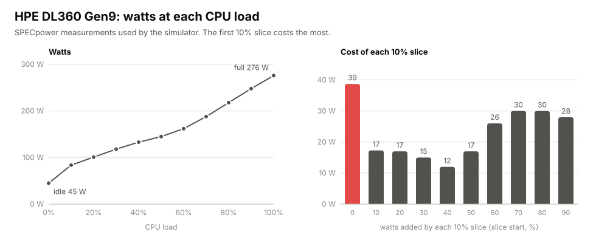
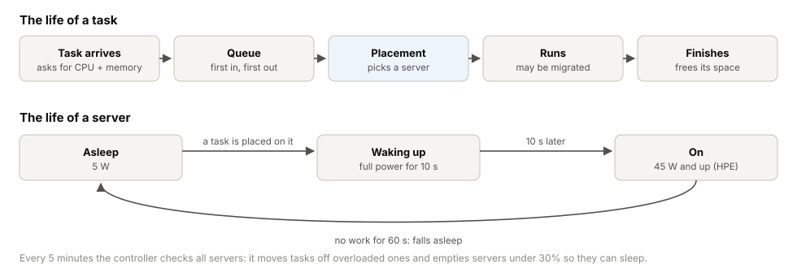
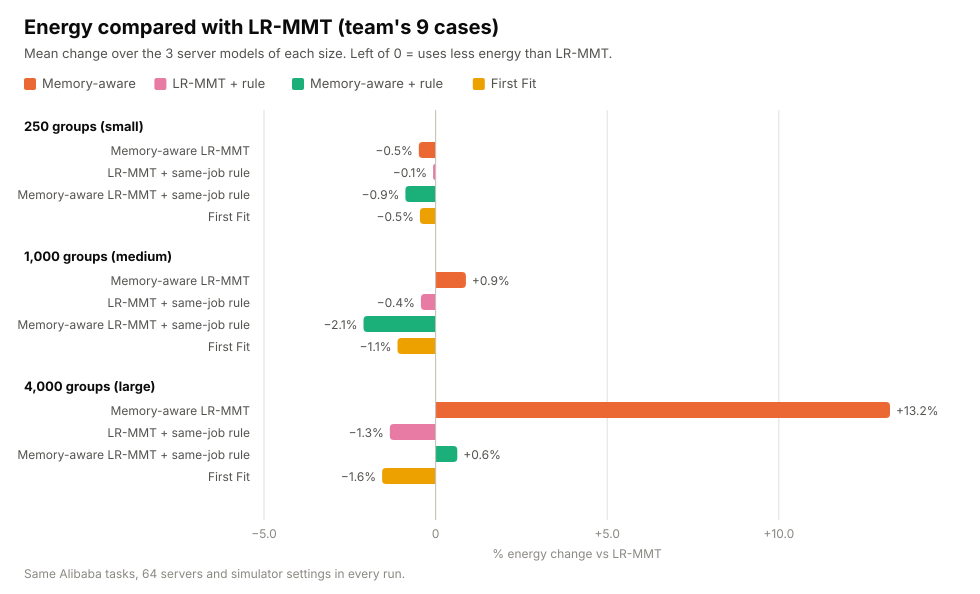
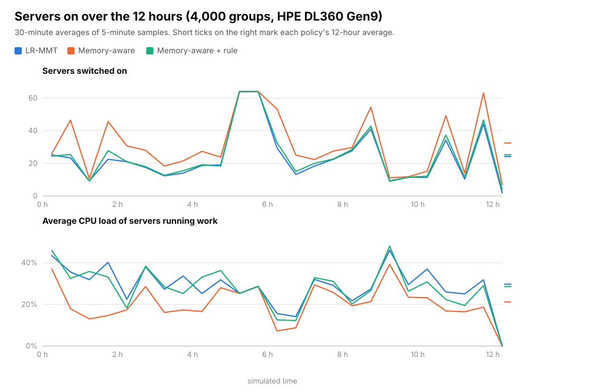
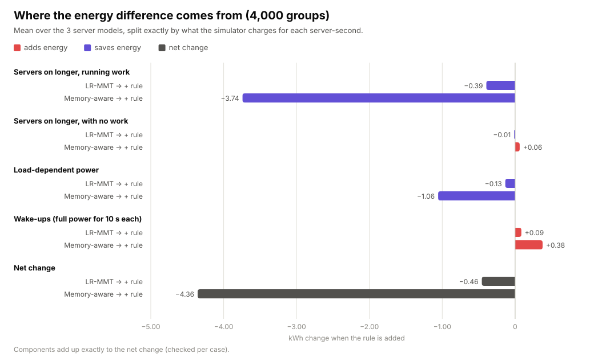
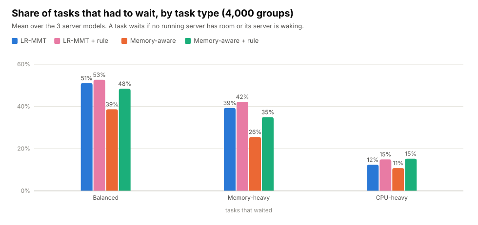

Why the proposed memory-aware placement used more energy, a new rule that keeps the tasks of each job on the same server, and a fair test on the team's own data.
The whole story in six sentences The memory-aware LR-MMT our proposal promised used 11–15% more energy than plain LR-MMT on the team's largest workload, because its balance score spreads tasks onto extra servers (my D5 analysis). This guide adds one new placement rule: put each task next to tasks of its own job, because a server can only sleep when its last task leaves, and in this trace tasks of the same job finish a median of 2 s apart. The rule needs no prediction and adds no tuned numbers, and we fixed the plan in git before running it once on the team's own 9 cases. It made both algorithms use less energy in all 9 cases: −1.02% for LR-MMT and −8.69% for the memory-aware version (−11.1% on the largest workload). With the rule, the memory-aware version used the least energy of all six algorithms in 6 of the 9 cases, but First Fit still wins the largest workload, and one large case went just over the team's crowding limit. This is a simulation of one 12-hour trace with the same data used throughout, so the results are promising rather than proven.
How to read this guide. Part A builds every idea from zero, with a tiny example first each time. If you already know a section, skip it. Part B explains, with pen and paper, why the proposed memory-aware placement used more energy (my D5 analysis). Part C introduces the new rule. Part D explains how we made sure the test was fair, Part E gives the results, and Part F says what they do and do not prove.
A data center is a building full of computers called servers. Companies send them work: "run this program". Our simulated data center has 64 servers of nearly the same size. For this project, two parts of a server matter:
Analogy: a kitchen Think of a server as a kitchen. The CPU cores are the cooks and the memory is the counter space. Every dish (a task) needs some cooks and some counter space. If the counter is full, you cannot start another dish, even if cooks are standing around. That is exactly what happens on our servers, and it matters later.
Two words that sound alike but mean different things:
| Word | Unit | Meaning | Everyday example |
|---|---|---|---|
| Power | watt (W) | how fast electricity is used right now | a 60 W light bulb |
| Energy | kilowatt-hour (kWh) | power × time: the total used | the number on the electricity bill |
1 kWh = 1,000 W for 1 hour, about a microwave running for one hour.
Tiny example A server drawing 100 W for 3 hours uses 100 W × 3 h = 300 Wh = 0.3 kWh. Two servers drawing 100 W each for 3 hours use 0.6 kWh.
The goal of the whole project is fewer kWh for the same work, without making the work noticeably slower.
The simulator (Brave's engine, ecosched/engine.py) puts every server in exactly
one of three states at every moment. These are the numbers for the HPE server model:
| State | Power | What it means |
|---|---|---|
| Asleep | 5 W | cannot run anything, almost free |
| Waking up | 276 W for 10 s | full power while it boots; its tasks wait |
| On | 45 W and up | runs tasks; draws more the busier its CPU is |
Two rules complete the picture:
The most important number in this guide Being on costs 40 W more than sleeping (45 − 5), even with nothing to do. So every server that is on but could be asleep wastes 40 W. Saving energy is mostly about having fewer servers on.
How much power does an on server draw? That depends on how busy its CPU is. Real servers were measured with a standard benchmark called SPECpower, which records the watts at 0%, 10%, 20%, …, 100% CPU load. That list is the server's power curve. The team uses three real server models: HPE DL360 Gen9, Huawei RH2288H V3 and QuantaGrid D51B-2U. Here is the HPE curve:
| CPU load | Watts | Cost of the next 10% | Watts per unit of work |
|---|---|---|---|
| 0% | 45.0 | 38.7 | |
| 10% | 83.7 | 17.3 | 837 |
| 20% | 101.0 | 17.0 | 505 |
| 30% | 118.0 | 15.0 | 393 |
| 40% | 133.0 | 12.0 | 332 |
| 50% | 145.0 | 17.0 | 290 |
| 60% | 162.0 | 26.0 | 270 |
| 70% | 188.0 | 30.0 | 269 |
| 80% | 218.0 | 30.0 | 272 |
| 90% | 248.0 | 28.0 | 276 |
| 100% | 276.0 | 276 |
Read the table in three baby steps:

Tiny example: packing versus spreading You have work equal to 20% of one server's CPU, and two servers.
| Server A | Server B | Total | |
|---|---|---|---|
| Pack it on one server | 20% → 101 W | asleep → 5 W | 106 W |
| Spread it over two | 10% → 83.7 W | 10% → 83.7 W | 167.4 W |
Same work, but spreading costs 61.4 W more (58% more). Of that, 40 W is server B being on instead of asleep, and 21.4 W is paying for the expensive first slice twice.
In 2017 Alibaba published a trace: a log of 12 hours of real work in one of its data
centers. The team turned it into simulator input (RAW_Alibaba/).
The simulator replays the tasks exactly: same arrival times, same requests, same recorded durations. Only the scheduling rule changes between runs, so any difference in energy comes from the rule alone.
A scheduler makes two kinds of decisions:
Tasks are placed in arrival order (first in, first out). If the next task fits on no server, every task behind it waits too. A task's wait is the time from arrival to start. Usually it is 0; it is 10 s if a server had to wake up; it is longer only when the whole data center is full.

Analogy: moving trucks You are moving boxes with rented trucks. Every truck on the road costs money, even if it is half empty. You want few, full trucks. In our world, trucks are servers, boxes are tasks, and sending a truck home means letting a server sleep.
Classic packing rules:
| Rule | How it chooses | Effect |
|---|---|---|
| First Fit | the first server, in a fixed order, that has room | fills the "front" servers; the back ones stay asleep |
| Best Fit | the fullest server that still has room | keeps loads high; empty servers drain |
Our world differs from moving trucks in one big way: tasks leave on their own when they finish, and new ones keep arriving. So servers slowly empty out over time. Consolidation means helping that along: move the last few tasks off a nearly empty server so it can go to sleep sooner.
LR-MMT is a well-known energy-saving method from research (Beloglazov and Buyya, 2012).
In our simulator it is Rohan's code (ROHAN_Task/policies.py). It has two parts.
Part 1: the controller. Every 5 minutes it looks at every server and does three things.
Tiny example: the trend line A server's last 10 CPU readings climbed steadily from 62% to 80%. The trend line predicts 82% next. Times 1.2 gives 98%, which is under 100%: not overloaded. If the readings had climbed to 84% instead, the prediction would be 86%, and 86% × 1.2 = 103%: overloaded, so the smallest tasks move away.
Part 2: placement. Between controller checks, every new task goes to the server where it adds the fewest extra watts. This is called power-aware best fit. As a formula, the score of a server is:
The lowest score wins. Dividing by (276 − 45) = 231 W just turns watts into a number between 0 and about 1. A sleeping server counts as 5 W "before", so waking one looks expensive.
Tiny example: scores for one typical task (HPE)
| Server | Extra watts for this task | Score (lower wins) |
|---|---|---|
| Busy server, 45% CPU | 0.94 W | 0.0041 |
| Empty server, on, no work | 3.02 W | 0.0131 |
| Sleeping server | 43.02 W | 0.1862 |
The busy server wins. Waking a sleeping server is about 46 times more expensive, so LR-MMT only wakes a server when no running server has room.
The proposal's idea was to make placement care about memory too, not only CPU, so that neither resource is wasted (the "Tetris" idea: fit shapes together). Rohan implemented it by adding a balance term to the score:
Here | x | means "the size of x, ignoring the sign". A server whose CPU and memory are equally full gets no penalty. A lopsided server gets a penalty.
Tiny example A server at 30% CPU and 57% memory: | 0.30 − 0.57 | = 0.27, so the penalty is 0.25 × 0.27 ≈ 0.068. Remember this number; it is about to cause trouble.
| Measure | What it tells you | Better is |
|---|---|---|
| Energy (kWh) | the electricity bill; the main goal | lower |
| Mean wait | average seconds from arrival to start | lower |
| P95 wait | 95% of tasks waited less than this | lower |
| Pressure | share of server-time above 90% CPU or memory; the team's warning sign for crowding | lower |
| Migrations | how many times tasks were moved (each move pauses a task) | lower |
| Wake-ups | how many times a server was woken | lower |
| Servers on | average number of servers switched on | lower |
In this simulator a crowded server does not actually slow down: requests can never exceed capacity. Pressure is therefore a warning sign, not real slowness, but the team uses it, so we report it.
The team's comparison (BASELINE_Comparison, 9 cases = 3 sizes × 3 server models) found:
My D5 analysis showed why: the memory-aware version keeps more servers switched on at the same time, because it spreads tasks out. On the largest workload, about 88% of its extra energy is servers kept on while running work (mean of the 3 server models). Below, the cause is worked out on paper.
Take one typical task (half a core, 1.17% of memory) and two HPE servers:
| Busy: 30% CPU, 57% memory | Empty: on, no work | |
|---|---|---|
| Extra watts for this task | 1.17 W | 3.02 W |
| Power score (watts ÷ 231) | 0.0051 | 0.0131 |
| Balance term (0.25 × imbalance after) | 0.0685 | 0.0010 |
| Memory-aware total | 0.0735 | 0.0141 ← picked |
The memory-aware rule picks the empty server, and that is a costly choice:
It gets worse with every task of the same job. Each task placed on a server adds a little more imbalance there, so the next task of the job looks cheaper on a different empty server. The memory-aware version therefore spreads one job's tasks across several servers (Part C3 shows this with the real code), and each of them stays on until its share of the job ends.
Why the score gets this wrong A score that compares choices should measure what each choice changes. The power part does ("watts after − watts before"). The balance part does not ("imbalance after"). Repairing that score is a possible next step (Part F3). This guide takes a different, simpler route: it leaves every score alone and adds one rule about which tasks share a server.
A server can only go to sleep when its last task finishes. So what keeps a server on is often a single leftover task.
Tiny example
| Server | Tasks on it | When it can sleep |
|---|---|---|
| S1 | 40 tasks of job J7, all started at 2:00 | when J7 ends |
| S2 | 30 tasks of J7 and 1 task of job J9 | when J7 and J9 have both ended |
If J9 runs an hour longer than J7, S2 stays on for that extra hour just for one task. Had that task been placed with the other J9 tasks, S2 could have slept as soon as J7 ended: 5 W instead of 45 W or more for that hour.
All the tasks of a job are created at the same moment, and they usually finish close together (C4 checks this on the team's data). So a server that holds one job tends to empty in one go.
"Suitable" means three things, and each one is there for a reason:
| Condition | Why it is needed |
|---|---|
| 1. The server is running work right now | The rule must never wake a sleeping server or refill an empty one. (The policy is not told when a task finishes, so its notes can be a few minutes out of date.) |
| 2. It already has tasks of this job | That is the whole idea: job-mates finish together. |
| 3. It stays under the overload line after this task (memory 90%, CPU forecast × 1.2) | Overcrowding would make the controller move the job's tasks apart again, the opposite of the goal. |
If several servers qualify, the algorithm's own score picks among them. If none
qualifies, the algorithm decides exactly as before. That is the whole rule. It is
added in front of Rohan's code for both LR-MMT and the memory-aware version
(RUSHI_Task/same_job/policy.py), and:
Job J7 arrives with 12 identical typical tasks. Five HPE servers are on: two busy ones (Busy-A: 30% CPU, 57% memory; Busy-B: 45% CPU, 50% memory) and three with no work (Empty-1 to Empty-3, which would fall asleep within 60 s if left alone). The tasks are fed one by one to Rohan's real code, with and without the rule:
| Algorithm | Where J7's tasks went | Servers holding J7 | Empty servers kept on by J7 |
|---|---|---|---|
| Memory-aware LR-MMT | Empty-1 × 4, Empty-2 × 4, Empty-3 × 4 | 3 | 3 |
| Memory-aware LR-MMT + rule | Empty-1 × 12 | 1 | 1 |
| LR-MMT | Busy-A × 6, Busy-B × 6 | 2 | 0 |
| LR-MMT + rule | Busy-B × 12 | 1 | 0 |
That is why we expected a much bigger effect on the memory-aware version than on plain LR-MMT, before running anything.
The rule only makes sense if tasks of the same job really finish close together. We checked on the team's own large sample, using 32,045 pairs of tasks from 2,297 jobs:
| Pairs of tasks | Median gap between finish times | Finish within 60 s of each other |
|---|---|---|
| Same job | 2 s | 96% |
| Different jobs, released in the same 5 minutes | 47 s | 58% |
Yes, strongly. Tasks of the same job finish almost together. 60 seconds is the simulator's idle timeout, so tasks that end within it let their server sleep in one go. (This check reads the recorded durations; no policy ever sees them.)
We searched the research literature (a web search, not a full systematic review):
| Published work | What it does | How ours differs |
|---|---|---|
| MinUsageTime bin packing (Li, Tang & Cai and follow-ups) | Groups work by finish time to empty servers, but assumes finish times are known in advance | We do not know finish times |
| Resource Central (Microsoft, 2017); lifetime-aware placement (Microsoft, 2023) | Machine learning predicts how long each virtual machine lives | No prediction model |
| LAVA and NILAS (Google, 2025) | Group machines by predicted lifetime; put short ones on servers kept on by long ones | No prediction; the job itself is the signal |
What we did not find anywhere: using job membership itself as the "will finish together" signal for energy-saving placement. That is the part we can propose as new, with the words "to our knowledge".
Analogy: the practice exam If you memorize last year's exam answers, you will ace last year's exam and learn very little about this year's. Tuning a scheduler on the same data you test it on is the same trap. You end up learning the quirks of that data, not a better rule. This is called overfitting.
A sneakier version: try ten variants, keep the one that looks best, and report only that one. Even if every variant is reasonable, picking the winner after seeing the results makes it look better than it really is.
742d058 on my working branch). For the pull request the code was moved into its own
folder and all 36 runs were repeated; every result matched the first run exactly.One honest caveat D5 used these same 9 cases, so this is not a test on data nobody has seen. What stops it from being "tuning on the data" is rules 1 to 3: nothing was adjusted after seeing a result.
BASELINE_Comparison): 250, 1,000 and
4,000 task groups, each run on the three server models separately.The performance limits are the team's own, from their earlier experiment
(POLICY_Improvement/config.json), not chosen by us:
A policy works better than another if all three hold:
| ID | Comparison | The question it answers |
|---|---|---|
| S1 | LR-MMT + rule vs LR-MMT | Does the rule improve LR-MMT? (main) |
| S2 | Memory-aware + rule vs memory-aware | Does the rule improve the memory-aware version? (main) |
| S3 | LR-MMT + rule vs First Fit | Does it now beat the simplest rule? |
| S4 | Memory-aware + rule vs First Fit | The same question for the memory-aware version |
| S5 | Memory-aware + rule vs LR-MMT | The team's question: does the proposal (with the rule) beat LR-MMT? |
| S6 | Memory-aware + rule vs LR-MMT + rule | With the rule on both, does caring about memory help? |
| What | Runs |
|---|---|
| LR-MMT + rule and memory-aware + rule × 9 cases | 18 |
| Rohan's two originals re-run with the counter × 9 cases (must match the team's results) | 18 |
| Total | 36 |
| First Fit and Best Fit × 9 cases: the team's committed results | (18 already done) |
Every run uses a fresh simulator and the team's own checks (validate_run): every
task finishes, nothing is rejected, durations are unchanged except for migration pauses,
and the energy parts add up to the total.
Everything in this part comes from the team's 9 cases: the 36 runs, plus the team's committed results for First Fit and Best Fit.
Each row is one question from Part D4, scored with the rules written down before running. Negative energy means less energy.
| ID | Question | Energy wins | Total energy | Largest workload | Cases outside limits | Works better? |
|---|---|---|---|---|---|---|
| S1 | Does the rule improve LR-MMT? | 9 of 9 | −1.02% | −1.33% | 0 | yes |
| S2 | Does the rule improve the memory-aware version? | 9 of 9 | −8.69% | −11.13% | 1 | no |
| S3 | Does LR-MMT + rule beat First Fit? | 0 of 9 | +0.33% | +0.23% | 0 | no |
| S4 | Does memory-aware + rule beat First Fit? | 6 of 9 | +1.34% | +2.22% | 0 | no |
| S5 | Does the proposal (memory-aware + rule) beat LR-MMT? | 7 of 9 | −0.03% | +0.63% | 0 | yes |
| S6 | With the rule on both, does caring about memory help? | 6 of 9 | +1.00% | +1.99% | 0 | no |
In plain words:
| Algorithm | Least energy, original four only | Least energy, all six |
|---|---|---|
| First Fit | 7 of 9 | 3 of 9 |
| Best Fit | 0 of 9 | 0 of 9 |
| LR-MMT | 0 of 9 | 0 of 9 |
| Memory-aware LR-MMT | 2 of 9 | 0 of 9 |
| LR-MMT + same-job rule | – | 0 of 9 |
| Memory-aware LR-MMT + same-job rule | – | 6 of 9 |
With only the four original algorithms, First Fit used the least energy in 7 of 9 cases. With the rule added, the memory-aware version takes 6 of them (every small and medium case), and First Fit keeps 3 (the largest ones).
All compared with LR-MMT, averaged over the 3 server models of each size:
| Algorithm (vs LR-MMT) | Small (250) | Medium (1,000) | Large (4,000) | All 9 cases |
|---|---|---|---|---|
| Memory-aware LR-MMT | −0.49% | +0.88% | +13.24% | +9.49% |
| LR-MMT + same-job rule | −0.07% | −0.43% | −1.33% | −1.02% |
| Memory-aware LR-MMT + same-job rule | −0.88% | −2.10% | +0.63% | −0.03% |
| First Fit | −0.46% | −1.11% | −1.56% | −1.35% |

The memory-aware version's large-workload penalty (+13.24%) shrinks to +0.63% with the rule.
On the largest workload, the memory-aware version kept 32.6 servers on, on average. With the rule it keeps 25.3, close to LR-MMT's 24.7.

The exact energy split from D5 (RUSHI_Task/accounting.py) says where the saving comes
from. Every server-second is charged in one state, so the parts add up exactly. Values
are the change in kWh per large (4,000-group) run when the rule is added, averaged over the
3 server models; negative = saves energy:
| Rule added to | Time on, running work | Time on, no work | Load-dependent | Wake-ups | Net (kWh) |
|---|---|---|---|---|---|
| LR-MMT | −0.39 | −0.01 | −0.13 | +0.09 | −0.46 |
| Memory-aware LR-MMT | −3.74 | +0.06 | −1.06 | +0.38 | −4.36 |
For the memory-aware version the rule saves 4.36 kWh per large run, and 86% of that is servers no longer kept on while running work. Wake-ups go up (1,129 → 1,639): servers that empty in one go fall asleep, so more of them have to be woken later. That costs +0.38 kWh, far less than it saves. For LR-MMT the same pattern is much smaller (0.46 kWh per run).

The rule did what it was designed to do: busy servers ran fewer different jobs at once. Mean number of different jobs on a server that is running work (mean of the 3 server models):
| Workload | LR-MMT | LR-MMT + rule | Memory-aware | Memory-aware + rule |
|---|---|---|---|---|
| 250 groups | 1.14 | 1.13 | 1.15 | 1.12 |
| 1,000 groups | 1.33 | 1.33 | 1.34 | 1.30 |
| 4,000 groups | 2.04 | 1.98 | 2.18 | 1.71 |
The change is biggest for the memory-aware version on the large workload (2.18 → 1.71 jobs per busy server; servers running a single job went from 41% to 61%), exactly where its energy fell most. For plain LR-MMT the change is small (2.04 → 1.98), because LR-MMT already kept most of a job's tasks together, and so is its saving.
Saving energy only counts if the work is not noticeably slower. Large workload, mean of the 3 server models:
| Algorithm | Energy (kWh) | Mean wait | P95 wait | Pressure | Migrations | Wake-ups | Servers on |
|---|---|---|---|---|---|---|---|
| LR-MMT | 34.54 | 55.9 s | 466 s | 17.9% | 8,045 | 1,863 | 24.7 |
| LR-MMT + same-job rule | 34.08 | 56.1 s | 465 s | 18.1% | 7,028 | 1,981 | 23.9 |
| Memory-aware LR-MMT | 39.12 | 54.5 s | 465 s | 14.1% | 7,152 | 1,129 | 32.6 |
| Memory-aware LR-MMT + same-job rule | 34.76 | 55.5 s | 465 s | 15.1% | 5,087 | 1,639 | 25.3 |
| First Fit | 34.01 | 56.0 s | 465 s | 19.6% | 0 | 1,901 | 23.9 |
Remember that pressure is a warning sign, not real slowness: in this simulator a crowded server does not slow down, because requests can never exceed capacity.
The proposal also asked how each type of task is affected. Large workload, mean of the 3 server models:

| Task type | Algorithm | Tasks per case | Waited | Mean wait | Moved at least once |
|---|---|---|---|---|---|
| Balanced | LR-MMT | 303,807 | 51.1% | 53.2 s | 1.5% |
| Balanced | LR-MMT + same-job rule | 303,807 | 52.7% | 53.3 s | 1.3% |
| Balanced | Memory-aware LR-MMT | 303,807 | 38.7% | 51.8 s | 1.4% |
| Balanced | Memory-aware LR-MMT + same-job rule | 303,807 | 48.4% | 52.9 s | 0.9% |
| Memory-heavy | LR-MMT | 73,730 | 39.3% | 67.1 s | 4.6% |
| Memory-heavy | LR-MMT + same-job rule | 73,730 | 42.2% | 67.4 s | 4.1% |
| Memory-heavy | Memory-aware LR-MMT | 73,730 | 25.6% | 65.6 s | 3.8% |
| Memory-heavy | Memory-aware LR-MMT + same-job rule | 73,730 | 35.0% | 66.6 s | 2.8% |
| CPU-heavy | LR-MMT | 748 | 12.4% | 53.7 s | 13.1% |
| CPU-heavy | LR-MMT + same-job rule | 748 | 14.9% | 53.9 s | 12.1% |
| CPU-heavy | Memory-aware LR-MMT | 748 | 10.8% | 53.4 s | 11.3% |
| CPU-heavy | Memory-aware LR-MMT + same-job rule | 748 | 15.3% | 53.9 s | 16.5% |
With the rule, more tasks have to wait at all, because fewer servers are kept on and more of them must be woken (E4). For the memory-aware version, the share that waited rises from 38.7% to 48.4% for balanced tasks and from 25.6% to 35.0% for memory-heavy tasks; for LR-MMT it rises by at most 2.9 points. The waits stay short: no task type's mean wait changes by more than 1.04 s. Memory-aware + rule still makes fewer tasks wait than LR-MMT (35.0% against 39.3% of memory-heavy tasks).
These were written in RUSHI_Task/same_job/DESIGN.md before the first run.
| Prediction, written before the first run | Did it hold? |
|---|---|
| Mechanism: busy servers hold fewer different jobs, for both policies, at every size | yes |
| S1 is small (within ±1.5% in total) and saves energy | yes |
| S2 saves more than S1 on the largest workload | yes |
| S5: memory-aware + rule still uses more energy than LR-MMT on the largest workload | yes |
| Side effects small: every S1 and S2 case within the team's limits | no |
4 of 5 held. The one that did not: one S2 case went just over the crowding limit (E1).
On the team's own 9 cases, with nothing tuned and the plan fixed before running:
How big is this? For plain LR-MMT, −1.02% is modest. For the memory-aware version the gain is large, but First Fit still uses the least energy on the largest workload, and the memory-aware comparison misses the team's crowding limit in one case by 0.11 points. The honest headline is: the rule improves both LR-MMT versions in all 9 cases; First Fit still wins the largest workload.
RUSHI_Task/same_job/policy.py, built on
Rohan's class. With the rule switched off, it is Rohan's policy exactly.| Term | Meaning in this guide |
|---|---|
| Balance term | The memory-aware part of the score: 0.25 × how lopsided CPU and memory are on a server after placing the task. |
| Best Fit / First Fit | Packing rules: put the task on the fullest server that fits / on the first server in a fixed order that fits. |
| Consolidation | Moving the last tasks off a lightly used server so it can sleep. |
| Controller | The part of LR-MMT that runs every 5 minutes: overload check, MMT moves, emptying servers under 30%. |
| CPU, core | The calculating part of a server. Our servers have 64 cores each. |
| Energy, kWh | Power × time. 1 kWh = 1,000 W for 1 hour. The main thing we try to reduce. |
| FIFO | First in, first out: tasks are placed in arrival order. |
| Fragmentation | Free space split across servers in pieces that are awkward to use. |
| Idle timeout | An on server with no work falls asleep after 60 seconds. |
| Job, job-mates | Here, a task group: tasks created together. Job-mates are tasks of the same job. |
| LR (Local Regression) | A weighted trend line through a server's last 10 CPU readings, used to predict the next one. |
| Memory | Where running programs keep their data. Usually the resource that runs out first here. |
| Migration, pause | Moving a running task to another server. It pauses while its memory is copied. |
| MMT | Minimum Migration Time: move the tasks that are quickest to copy (smallest memory) first. |
| Overfitting | Tuning something so it fits the test data's quirks instead of being genuinely better. |
| Overload line | Memory at 90%, or CPU forecast × 1.2 at 100%. Above it, the controller moves tasks away. |
| P95 | The 95th percentile: 95% of the values are below it. |
| Placement | Choosing the server for a new task. |
| Power, watt (W) | How fast electricity is used right now. |
| Power curve, SPECpower | A server's measured watts at 0%, 10%, …, 100% CPU load. |
| Pressure | Share of server-time above 90% CPU or memory: the team's warning sign for crowding. |
| Request | The CPU and memory a task asks for. The simulator reserves exactly that. |
| Same-job rule | This guide's new rule: put a new task on a server that is running work, already has tasks of its job, and stays under the overload line; otherwise decide as before. |
| Score | The number placement uses to rank servers. Lower wins. |
| Seed | The starting number of a random draw. Same seed, same draw. |
| Task, task group | A task is one running piece of work; a task group (a "job" in this guide) is tasks created together. |
| Trace | A recorded log of real work; here Alibaba's 2017 cluster trace. |
| Underload rule | A server under 30% of both CPU and memory is emptied if all of its tasks fit elsewhere. |
| Wake-up | Turning a sleeping server on: 10 seconds at full power, during which its tasks wait. |
From the repository root, with Python 3.10+ and the team's prepared inputs (see
RUSHI_Task/README.md for how to rebuild them from the release archive):
python -m unittest discover -s RUSHI_Task/tests -v
python -m RUSHI_Task.same_job.run
python -m RUSHI_Task.same_job.analyze
python -m RUSHI_Task.guide.build --profile <an empty scratch folder>
| Step | What it does | Time |
|---|---|---|
| Tests | 17 unit tests, including "rule off = Rohan's policy" | seconds |
same_job.run |
the 36 runs of Part D5; skips finished ones, so it can resume | ~25 min |
same_job.analyze |
scores the comparisons, applies the limits, checks the premise, writes tables and charts | ~1 min |
guide.build |
rebuilds this PDF from the code and the results (needs Microsoft Edge) | ~1 min |
Files: RUSHI_Task/same_job/ holds policy.py (the rule), DESIGN.md (the plan, fixed
before running), run.py, analyze.py and reports/ (every run's results, tables, charts
and REPORT.md). RUSHI_Task/guide/ holds this document and its source. The D5 analysis
itself is in RUSHI_Task/ (accounting.py, observer.py, rerun.py, analyze.py,
reports/).